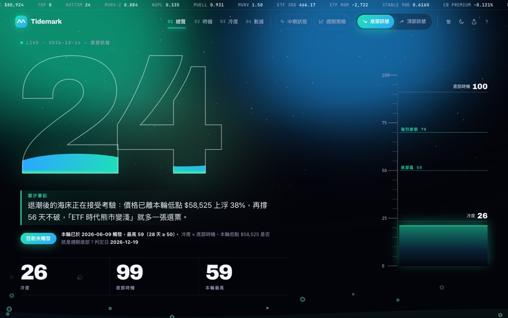
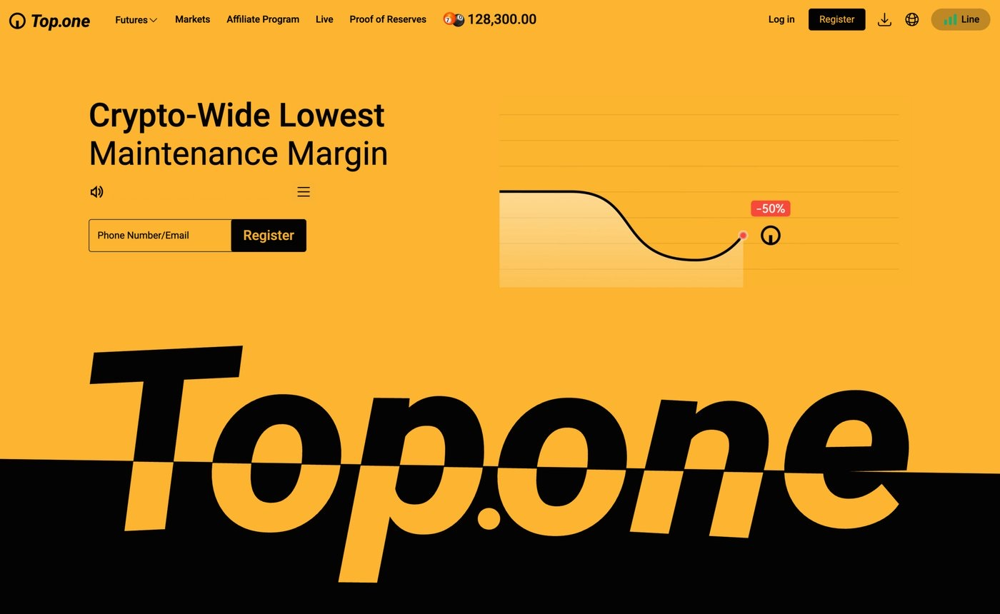
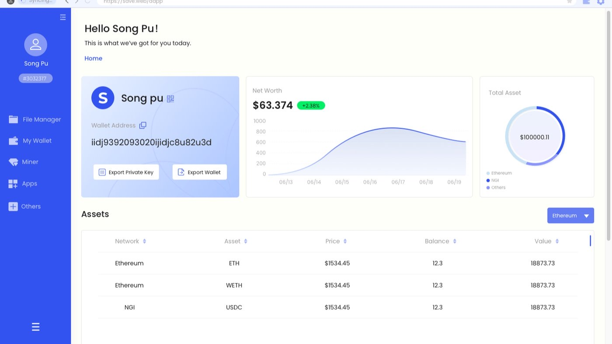
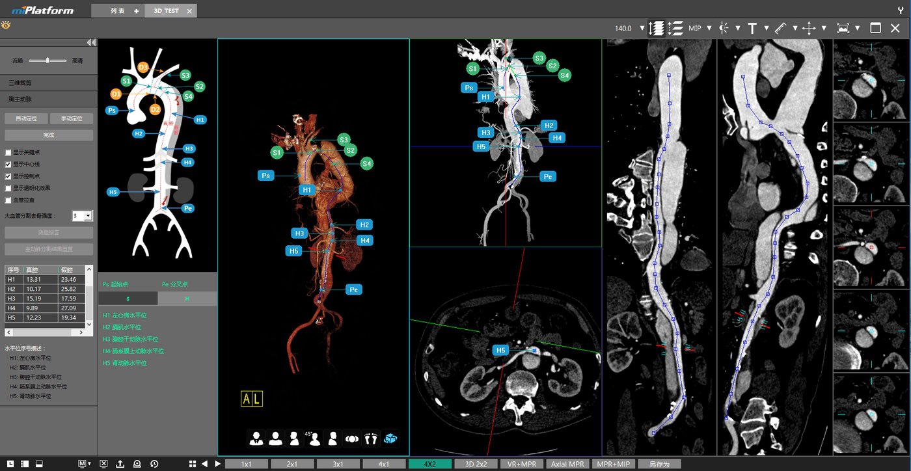
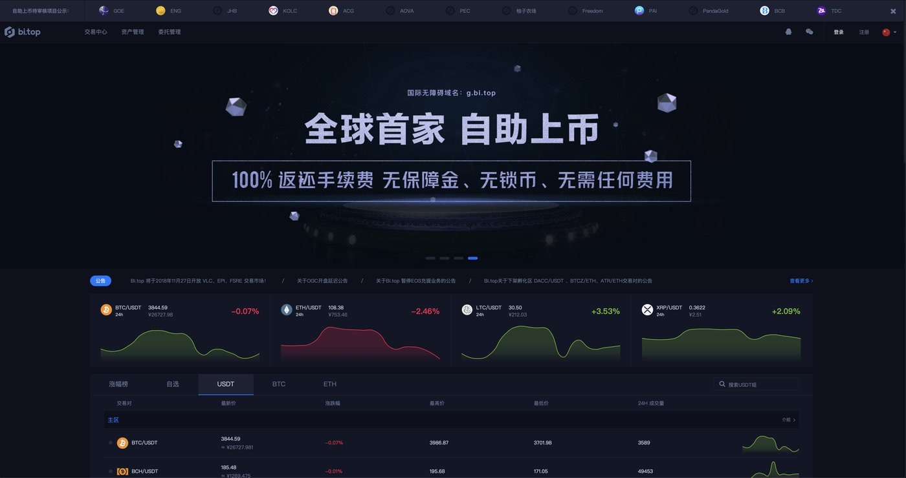

$10B+經手交易額
13年產品與工程 · 11 年產品管理
1000x槓桿風控
8件2026 個人產品 · 6 件上線
第一章 · 網球揮拍 AI · 2026
OneStroke 一拍
產品負責人 · 我＋Claude Code · 可試賣的 MVP問題
分數很多，
但不知道下一步該練什麼。
市面的分析工具給了分數，卻說不出差在哪；私人課每小時 NT$800–1,600，國外人工分析還要等好幾天。
做法
一個閉環：
診斷 → 練習 → 驗收。
上傳練習影片，自動切出每一拍、0–100 評分、還原成 3D 人體，再用教練口吻給練習方案；下一場上傳時自動驗收。
第二章 · 比特幣日報 · 每日 08:30
Daybreak 破曉
產品負責人 · 個人專案 · 中英文、日刊／夜刊問題
資料很多，結論很少。
鏈上、ETF、衍生品數據散在十幾個網站，每個數字都沒有「所以呢」，最需要紀律的時候最容易被情緒帶走。
做法
程式算數字、AI 只寫判讀、規則寫死。
AI 不碰任何數字，每句判讀都追得到資料欄位；新版首頁七個版面，各回答一個問題。
新版首頁展示影片 · 1:18
第三章 · BTC 週期訊號 · 每日更新
Tidemark
產品經理 · 獨立專案 · 8 次迭代上線
問題
只看熱度，會在錯的時間發警報。
經典指標每輪頂部讀數都在下降，中段高點反而比真頂部更熱。
做法
頂部 = 熱度 × 時機。
先驗證，通過才上線。
17 項公開指標加權成熱度，再乘上距減半、距低點兩個時鐘；每個新指標都先用歷史頂底與假訊號檢驗。
第四章 · 2012–2025
在那之前

2023–2025 · 亞太滿譽Top.one · 1000x撮合、訂單、錢包、做市的核心模組，加上多層風控。
2019–2023 · 上海分布Seeker BrowserWeb3 入口：6 大模組、4 個平台，並主導代幣經濟。
2016–2018 · 海納醫信AI 醫療影像半年 MVP、三家醫院採用；同時帶設計團隊。
2018–2019 · 原始空氣Bi.top · 0→1礦池 + 交易生態，3 個月完成 2.0 改版。更早：2012 年從軟體工程師起步，2014 年在 4 人初創做出拉貨寶，最後被母公司收購。
完整經歷看履歷 →
終章 · 下一個故事
Let’s build
Let’s build
the next one.
正在找 Web3、金融科技與 AI 領域的產品負責人角色，人在台北。